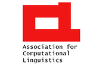
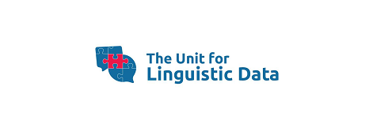
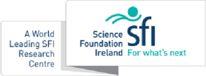
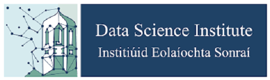
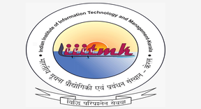
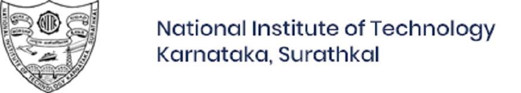
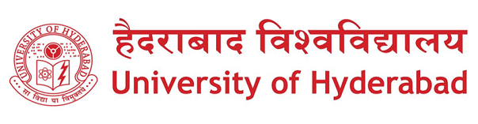
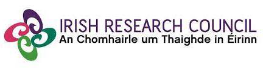

DravidianLangTech-2022
The Second Workshop on Speech and Language Technologies for Dravidian Languages
Home
Call for Papers
Shared Tasks
Important Dates
Organizers
Workshop Timetable
Registration







Copyright © DravidianLangTech-2023